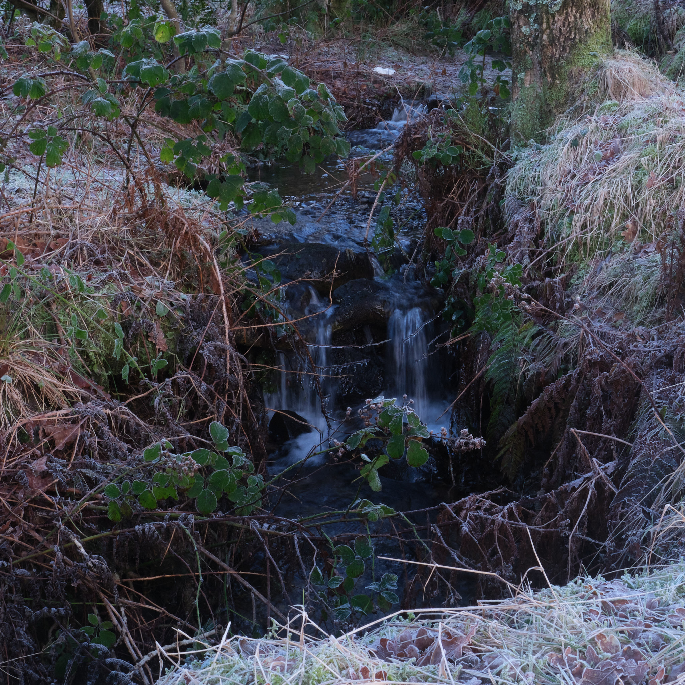
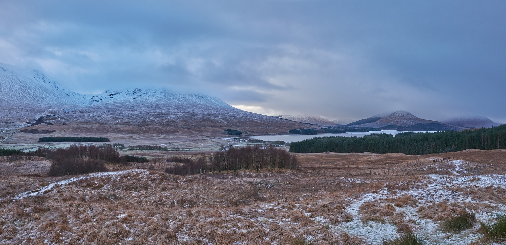
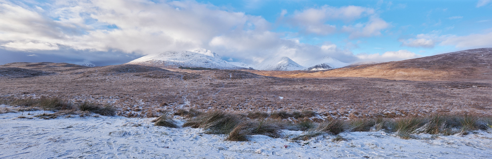
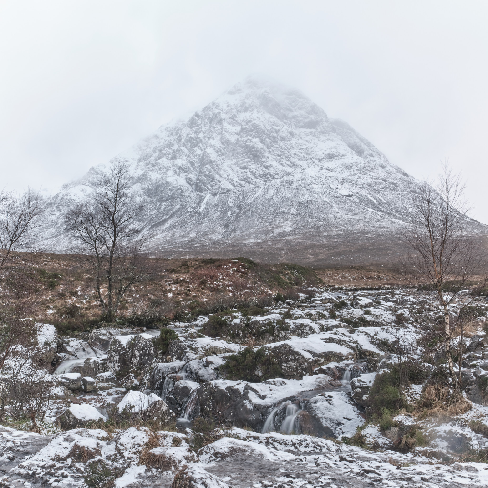

Fuji X-T5
Late 2022, Fuji brought out the fifth generation of the X-T series mirrorless cameras, the X-T5. I resisted, I really did. But:
- 40.2 million pixels, 23.5mm x 15.7mm (APS-C) X-Trans CMOS sensor
- 7-stop IBIS, ultrasonic sensor cleaning
- Digital Tele-Converter 2.0x / 1.4x
- Sensitivity ISO125 - 12800
- No anti-aliasing filter
- Pixel Shift Multi Shot
I bought the camera from the disinterested crew at Jessop’s on Sauchiehall Street in the weird Twixmas lull. Most other places had no stock, otherwise I would have rather got it from Wex, which is always a more pleasant experience. The first chance to use it came on our usual run for the hills on New Year’s Day, postponed a day this year due to a dinner date with friends on 1st. Weather sealing is built in to this generation of X-T cameras, which offers protection in the environments in which I often photograph. The weather obliged on this trip to Glencoe, ignoring the forecast of clear skies to offer some decent precipitation.
 We stopped on the way up, at a favourite beach on Loch Lubnaig to capture this view looking to the North. All of the images on this page were taken with the Fuji XF 16mm f/1.4 R WR lens. For depth of field, I stopped down to f/16 to keep the foreground grass reasonably sharp. At ISO400 this meant a shutter speed of 1/30s, something I would not have tried hand-held were it not for the in-built image stabilisation in this camera. I pushed my luck with that idea in the next photo of the waterfall.
We stopped on the way up, at a favourite beach on Loch Lubnaig to capture this view looking to the North. All of the images on this page were taken with the Fuji XF 16mm f/1.4 R WR lens. For depth of field, I stopped down to f/16 to keep the foreground grass reasonably sharp. At ISO400 this meant a shutter speed of 1/30s, something I would not have tried hand-held were it not for the in-built image stabilisation in this camera. I pushed my luck with that idea in the next photo of the waterfall.
 Cropped, hand-held at 1/15s, f/16 at ISO800. Focus is on the berries.
I should have changed lens for this image but it was very icy and I was twitchy enough about falling. Gravity and I have a history when it comes to lenses, and so I didn’t want to risk dropping my new camera by fiddling about whilst concentrating on remaining vertical. Multitasking is a myth.
 Stitch of two images, ISO400, 1/60s hand held at f/14.
I did consider the GF-X series, in particular the 100 mega pixel medium format GF-X 100S. The “100” indicates the 100 megapixel sensor built into that camera but that’s only one of the reasons you’d need a camera like that, the other being the “medium format” size of the sensor. I’ve been using the Fuji X system for almost 10 years now and have quite an investment in the glass. My wife is also a Fuji X photographer and the economy of a common lens system in the house makes sense. Carting about over six grand’s worth of camera on an icy day in Glencoe does not make sense, even if I could launch that much wonga at a hobby. I do this to reduce stress.
 70 Mega pixel pano from four images, cropped and distortion adjusted in Capture One Pro 23. ISO400 1/125 s at f/13.
The above two panoramas were made using a favourite technique I use for landscapes, originally intended for large portraits, called the Brenizer method. Ryan Brenizer’s method aims for background blur, or bokeh and works well for that, but renders nice large, printable landscapes when used with a tight aperture. The X-T5 has this available, of course, and I am pleased with the two panoramas taken looking South and West from the Loch Tulla viewpoint on the A82 near Bridge of Orchy. The images here on the website are much reduced, of course, but you can get a sense of the scope by clicking one of them and scrolling.
 Buachaille Etive Mòr. Tripod, f/16, ISO125, 20 1/8s exposures, pixel-shifted
There’s a trick new to the X-T5, though, which is pixel shift, in which multiple images are taken and combined using special software into one large image file. The intention is to avoid having to interpolate colours, rendering more accurate colour in the final image. The bonus is that this process can yield much larger resolution in the final image. Other cameras have been able to do this for some time, but the X-T5 is the first in the series to have the capability. This image of Buachaille Etive Mòr used this feature to produce a 100 MPixel square crop. This image would make a 32 inch square print at 300 dpi, more than enough for anyone’s living room.